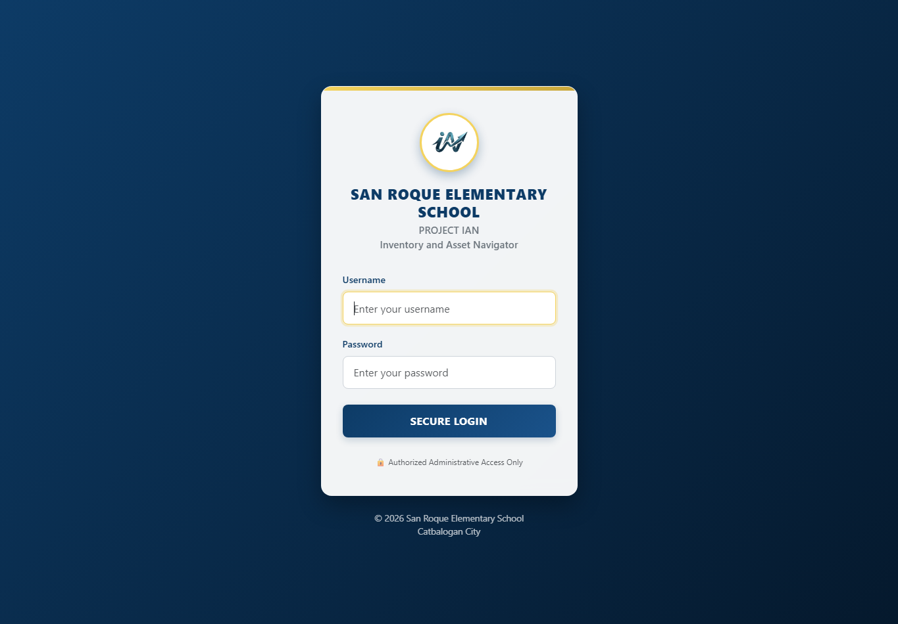

Project IAN (Inventory and Asset Navigator) is the school’s local inventory application. This manual starts with first-time setup and login, then walks through settings, daily inventory work, reports, and safe shutdown.
Screenshot 1 · Project IAN login

This is a direct screen capture of the login page. The username and password fields are intentionally blank.
1Start the installed app
Open Inventory System from the desktop shortcut or Windows Start Menu. The launcher starts the local web and database services and opens the app window. For the packaged installer, the first launch displays administrator setup before login.
2Create the first administrator
On the first-run setup page, enter an administrator name, username, and password twice. The username must be 3–50 characters using letters, numbers, dots, underscores, or hyphens. Choose a private password of at least 12 characters; keep it somewhere secure.
3Log in
Type the administrator username into Username.
Type the matching password into Password.
Select SECURE LOGIN. A successful login opens the Home dashboard.
There is no shared/default password. Ask the system administrator to help recover access; do not guess or share credentials. An inactive session is signed out after about 30 minutes.
Where to start each day: Settings (once, during setup) → Home to review totals → the relevant inventory section to record changes.
Project IAN · User Manual01 / 07
PROJECT IAN · SETTINGS
Prepare your records
02 · Recommended first visit
1Set up Settings
Select Settings in the left menu. Set up the school profile and reference lists before adding inventory; these lists are used in item forms, recipients, and reports.
Screen preview · Settings overview (sample data)
Settings Overview Administrator
Welcome back, ADMINISTRATORManage Staff, Units of Measure, and Positions.
Personnel ControlStaff Management
Inventory SetupUnit of Measure
OrganizationPosition Management
Access ControlAdmin Management
MaintenanceDatabase
School ProfileSchool Details
Staff ManagementUnit of MeasurePosition Management
Staff / Employee Directory
Employee ID
Name
Position
Mobile No.
Action
EXAMPLE-01
Sample Staff
Teacher
09xx xxx xxxx
Edit
Interface preview only. Names and values shown here are fictitious examples, not system records.
Suggested setup order
Positions: add the school’s official position names first.
Staff Management: add each employee ID, full name, position, and mobile number. Staff entries are used as recipients.
Unit of Measure: add the standard units staff should select for supplies.
School Details: enter the school name/address and choose the school head and custodian. These selections depend on your staff and position lists.
Account and data controls
Admin Management updates the administrator name/username. Enter the current password; provide and confirm a new password only when changing it.
Database offers a backup download, SQL import, and record deletion.
Use Edit for corrections. Delete only after checking that the record is no longer needed.
Careful: Import replaces database contents. Delete Records permanently removes operational records while retaining selected setup/account tables. Make a backup first and use these actions only when authorized.
Project IAN · User Manual02 / 07
PROJECT IAN · HOME
Your starting point
03 · Home dashboard
2Read the overview
Select Home in the sidebar after logging in. Dashboard tiles summarize current records; charts and tables help you review learning-resource distribution and transaction activity.
Screen preview · Home dashboard (sample values)
Dashboard Overview ADMINISTRATOR
Welcome back, ADMINISTRATOR!Overview of inventory supplies, stock status, transactions, and registered personnel.
Consumables · with stock24 items
Consumables · out of stock3 items
Non-consumable items18 items
Consumable transactions42
Non-consumable transactions11
Registered personnel15 staff
Science equipment7 items
Math equipment5 items
Inventory and learning-resource overview
Illustrative chart
Interface preview only. All counts and chart bars are fictitious examples.
What the tiles mean
Consumable items are counted separately when quantity is above zero or zero/below.
Other tiles summarize non-consumables, recorded transactions, registered employees, and Science/Math equipment.
Dashboard totals are a quick overview—not a substitute for checking the item table or official report.
Use the left menu
Home — totals and chartsSupplies — two inventory typesLearning Resources — equipment and booksSettings — staff and school setup
Select a menu heading to expand its sub-pages. The name and role at the upper-right identify the signed-in account.
Project IAN · User Manual03 / 07
PROJECT IAN · CONSUMABLES
Daily stock movement
04 · Supplies
3Consumable supplies
Open Supplies → Consumable Supplies. This section tracks stock items that are used up, such as paper and classroom materials.
Welcome back, ADMINISTRATOR!Summary of consumable supplies inventory.
Inventory controlAdd Item
Stock managementUpdate Quantity
AnalyticsRequisition & Issue Slip
RecordsStock Card
Issuance reportRSMI
Consumable supplies · Search supplies
Item Code
Item Name
Unit
Reference
Quantity
Action
EX-001
Copy paper
Ream
Opening stock
24
EditCart
EX-002
Marker
Piece
Opening stock
4 · Low
EditCart
EX-003
Folder
Piece
Opening stock
0 · Out
Edit
Interface preview only. Item names, codes, stock levels, and cart count are examples.
Add a supply or record incoming stock
Select Add Item. Enter item code, item name, unit, quantity, and a useful reference; save.
To increase an existing stock balance, select Update Quantity, find the item, and enter the new total quantity and its reference.
Search the table to confirm the correct item and balance are shown.
Release supplies to staff
Use the row’s cart button to add an item and quantity; repeat for other items.
Open the cart icon. Review the cart and select the intended recipient(s). Each selected recipient receives every item in that cart.
Select Release Items only after verifying quantities and recipients. Check the transaction/report record afterward.
The cart is per signed-in administrator and may remain in that browser until cleared. Remove incorrect lines or clear the cart before completing a release.
Project IAN · User Manual04 / 07
PROJECT IAN · NON-CONSUMABLES
Property and equipment
05 · Supplies
4Non-consumable supplies
Open Supplies → Non-Consumable Supplies to record durable property and equipment. The list shows property number, description, category, costs, quantities, recipient, and remarks.
Welcome back, ADMINISTRATOR!Summary of non-consumable supplies inventory.
Inventory controlAdd and Release Item
AnalyticsRPCPPE Report
Non-consumable register
Property Number
Description
Category
Unit Cost
Qty
Recipient
Action
EX-ICT-001
Desktop computer
ICT Equipment
₱ 35,000
1
Sample Staff
Edit
EX-FUR-002
Teacher desk
Furniture & Fixtures
₱ 4,500
2
Sample Staff
Edit
Interface preview only. Property details and amounts are fictitious examples; confirm official values from source records.
Add or release a property item
Select Add and Release Item and complete the property number, description, unit, category/item type, unit cost and total cost when available, quantity per Property Card, physical count, shortage/overage values, remarks, and recipient. Review the recipient and counts before selecting Add Item.
Use Edit to correct an existing row. Treat property-number and count changes as controlled records: verify against the physical item and official property documents before saving.
RPCPPE report
Select RPCPPE Report to open the property report. Check that the school profile, property records, classifications, and quantities are complete before printing. Use the browser’s print dialog to choose printer or Save as PDF.
Good practice: Enter the correct unit of measure and category consistently. An incorrect category or physical count affects review and official reporting.
Project IAN · User Manual05 / 07
PROJECT IAN · LEARNING RESOURCES
Equipment and textbooks
06 · Learning Resources
5Science, Math, and textbooks
Open Learning Resources in the sidebar and choose a page. Set up staff and units first so recipients and unit lists are available.
Screen preview · Science & Math equipment (sample data)
Science & Math Equipment Overview ADMINISTRATOR
Science & Math EquipmentReview equipment records by learning area.
Inventory controlAdd Item
ReportsInventory Report
ScienceMath
Item Code
Item Name
Quantity
Unit
Action
EX-S-01
Microscope
2
Piece
Edit
EX-S-02
Measuring cylinder
10
Piece
Edit
Interface preview only. All codes, equipment, and quantities are fictitious.
Science & Math equipment
Choose the Science or Math tab. Select Add Item and enter the item code, item name, quantity, unit, and type. Check the selected tab/type before saving. Use row actions to edit or delete; use Inventory Report for a printable report.
TextBooks
Open TextBooks, select Add Textbooks, then enter item name, grade level, subject, quantity, unit, teacher recipient, and condition (New, Used, Old, or Damage). Use the list to review records and the Textbooks Report card to print/export the report.
Only select a teacher recipient after their employee record exists in Settings. Keep condition and quantity aligned with the physical books on hand.
Project IAN · User Manual06 / 07
PROJECT IAN · PRINT, BACK UP, EXIT
Protect your records
07 · Finish safely
Reports, backups, and logout
Review records before printing, keep a protected backup, and close the local app when you finish.
Reports and inventory historyConfirm period and transaction details before producing official copies.
AnalyticsRequisition and Issue Slip
Inventory recordsStock Card
Issuance reportRSMI
RSMI · Report of Supplies and Materials Issued
Month & Year October 2026 ▾View / Print
Transaction
Item
Recipient
Date
EXAMPLE-TX
Copy paper
Sample Staff
Sample date
Interface preview only. Names, transactions, and dates are fictional examples.
Print or save a report
Consumables: Requisition and Issue Slip opens the transaction list; Stock Card shows item history; RSMI is filtered by month/year.
Non-consumables: use RPCPPE Report. Learning Resources has separate Science/Math and Textbooks reports.
Check the selected period, school details, item names, quantities, and recipients. Choose a printer or Save as PDF in the print dialog.
Back up and restore
Recommended: use the Windows Start Menu Back Up Inventory System shortcut. Store the SQL file somewhere separate and protected.
Restore with the Start Menu Restore Inventory System shortcut; select a trusted backup and confirm replacement.
Settings → Database can also download a backup or import an SQL file. Import replaces current contents.
Log out and close
Select Logout in the sidebar and confirm. Close the Inventory System window to stop its local services. If the default browser was opened instead of the app window, use Stop Inventory System from the Start Menu.
Protect the data: SQL backups contain readable inventory and account data. Store them privately. Do not delete the app’s database files manually or uninstall with the remove-data choice unless you intend to erase the records and backups.
If startup fails: retry once; check whether another local service is using resources. For the packaged installer, logs are under %LOCALAPPDATA%\InventorySystem\logs. Preserve the data folder and restore a known-good backup only after seeking administrator help.
Project IAN · User Manual · Screen previews use sample data except login screenshot07 / 07